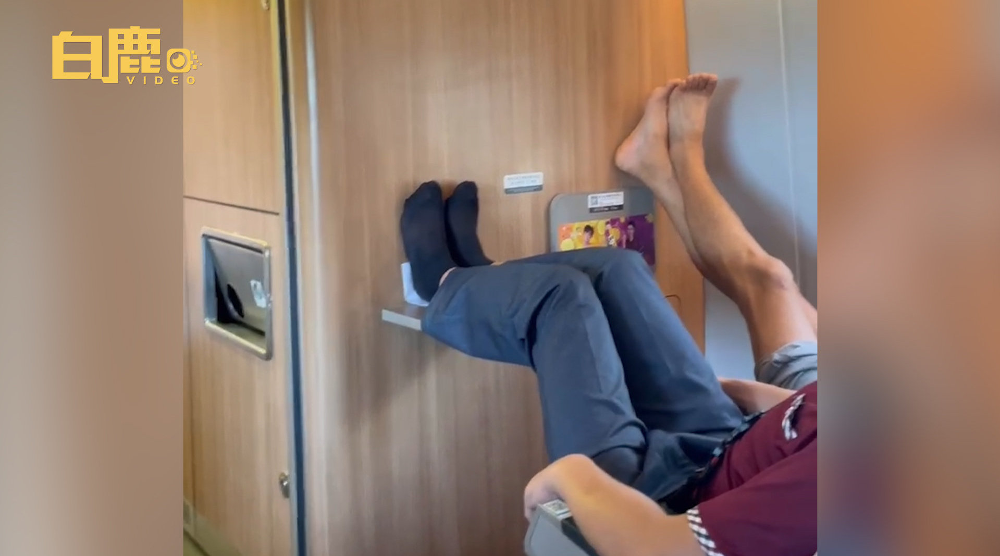

这种事情我不懂，为什么被协调走的是董先生。难道不应该是霸占别人座位的人被拘留吗。
@观察者网:
【#父子俩高铁霸座后脱鞋搭脚# 被占座小伙：公共场合要约束自己】
据@白鹿视频 消息：9月11日，河南驻马店。董先生乘坐G72次列车前往北京，上车后发现自己座位上坐着一大爷，说明情况后一旁大爷的儿子态度恶劣称想坐哪坐哪。随后董先生还看到大爷的儿子脱鞋将脚架在桌板上，两人未戴口罩。乘务员帮董先生协调至空座坐下，反复提醒后父子戴上了口罩。
 白鹿视频的微博视频
白鹿视频的微博视频
据@白鹿视频 消息：9月11日，河南驻马店。董先生乘坐G72次列车前往北京，上车后发现自己座位上坐着一大爷，说明情况后一旁大爷的儿子态度恶劣称想坐哪坐哪。随后董先生还看到大爷的儿子脱鞋将脚架在桌板上，两人未戴口罩。乘务员帮董先生协调至空座坐下，反复提醒后父子戴上了口罩。

754万次播放
00:59